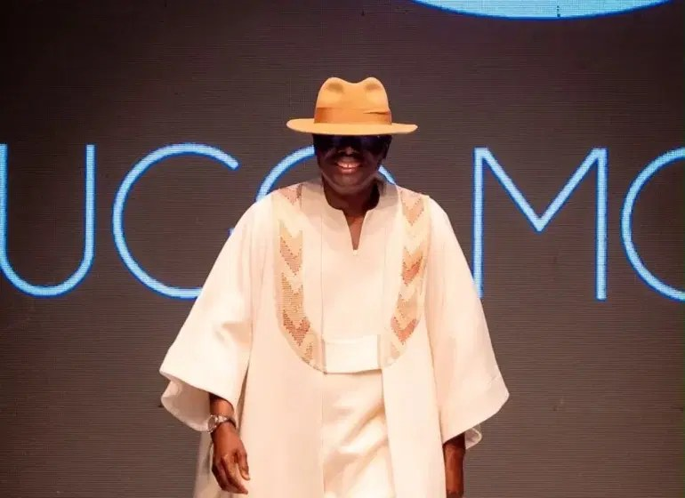

Photos: Sanwo-Olu walks runway alongside models at Lagos Fashion Week

Lagos State Governor Babajide Sanwo-Olu made a surprise appearance on the runway at the 2026 Lagos Fashion Week, walking alongside models in an ensemble by Nigerian designer Ugo Monye. The governor said he had stepped away from his usual governance work to support Monye and the event’s role in promoting fashion, creativity and culture in Lagos.
Sanwo-Olu wore regal off-white attire combining a traditional caftan with a kimono-inspired design, paired with a beige fedora. He drew applause as he walked across the runway, giving peace signs and nodding to spectators.
This year’s event, themed “CRAFTED: Heritage”, began last Wednesday at the Federal Palace Hotel in Lagos and is scheduled to conclude on Sunday. The annual gathering brings together designers, models, industry professionals and fashion enthusiasts to celebrate African creativity, craftsmanship and heritage.
Source: Vanguard